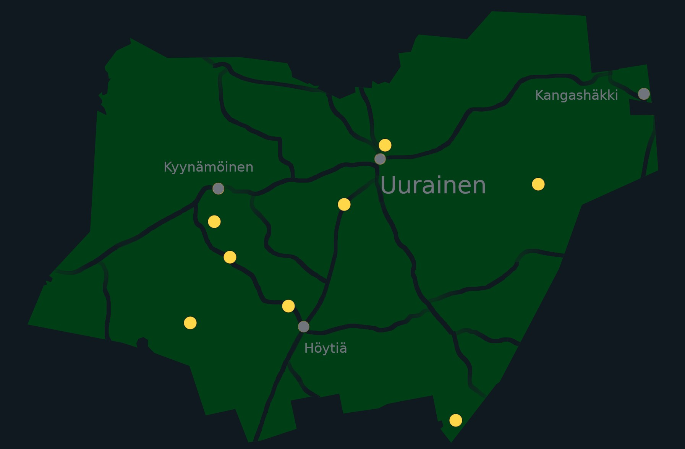

Tämä sivusto on luotu esittelemään edut, mahdollisuudet ja esteet erilaisten kohteiden esittämisessä 360° valokuvilla. Sen tarkoitus on toimia pohjana käytön opettelulle ja tuleville projekteille. Jotkut kuvaukset ja tiedot saattavat vaatia parantamista tulevaisuudessa.
Demo-web-sivuilla näkyy erilaisia tyylejä ja mahdollisia ongelmia. Tämän vuoksi se sisältää myös kyseenalaisen laatuisia kuvia, jotka eivät välttämättä sovellu julkiseen esittelyyn ja markkinointiin tulevaisuudessa.
Huomautuksia demoverkkosivuille: englanniksi.
Sorvasen lintutorni on tässä.
Miehinkäisen luontopolku on tässä ja Talkoovuorten luontopolku on tässä.
Luontopolku Kontionjälki on tässä.
Esapetäjän luontopolku on tässä.
Särkilammen lintutorni on tässä.
Konttivuoren luontopolku on tässä.
Huutoniemen jäkäläpolku on tässä.
Uuraisten ulkoilualueet ovat tässä.
Uuraisten sivut on tässä.
Hyvän Tuulen paja on Uuraisten kunnan työpaja.
Tämä projekti on tehnyt yhteistyössä Hyvän Tuulen pajan kanssa.
